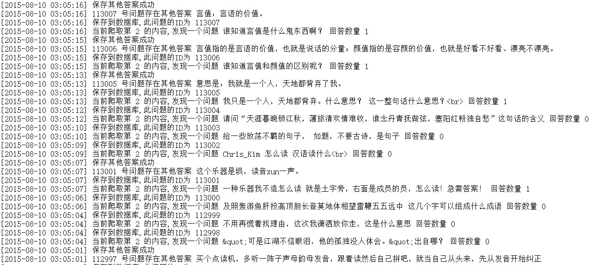

Python爬虫实战六之抓取爱问知识人问题并保存至数据库
大家好，本次为大家带来的是抓取爱问知识人的问题并将问题和答案保存到数据库的方法，涉及的内容包括：
- Urllib的用法及异常处理
- Beautiful Soup的简单应用
- MySQLdb的基础用法
- 正则表达式的简单应用
环境配置
在这之前，我们需要先配置一下环境，我的Python的版本为2.7，需要额外安装的库有两个，一个是Beautiful Soup，一个是MySQLdb，在这里附上两个库的下载地址，
大家可以下载之后通过如下命令安装
python setup.py install
环境配置好之后，我们便可以开心地撸爬虫了
框架思路
首先我们随便找一个分类地址，外语学习 – 爱问知识人，打开之后可以看到一系列的问题列表。
我们在这个页面需要获取的东西有：
总的页码数，每一页的所有问题链接。
接下来我们需要遍历所有的问题，来抓取每一个详情页面，提取问题，问题内容，回答者，回答时间，回答内容。
最后，我们需要把这些内容存储到数据库中。
要点简析
其实大部分内容相信大家会了前面的内容，这里的爬虫思路已经融汇贯通了，这里就说一下一些扩展的功能
1.日志输出
日志输出，我们要输出时间和爬取的状态，比如像下面这样：
- [2015-08-10 03:05:20] 113011 号问题存在其他答案 我个人认为应该是樱桃沟很美的
- [2015-08-10 03:05:20] 保存到数据库,此问题的ID为 113011
- [2015-08-10 03:05:20] 当前爬取第 2 的内容,发现一个问题 百度有一个地方，花儿带着芳香，水儿流淌奔腾是什么意思 多多帮忙哦 回答数量 1
- [2015-08-10 03:05:19] 保存到数据库,此问题的ID为 113010
所以，我们需要引入时间函数，然后写一个获取当前时间的函数
import time
#获取当前时间
def getCurrentTime(self):
return time.strftime('[%Y-%m-%d %H:%M:%S]',time.localtime(time.time()))
#获取当前时间
def getCurrentDate(self):
return time.strftime('%Y-%m-%d',time.localtime(time.time()))
以上分别是获取带具体时间和获取日期的函数，在输出时，我们可以在输出语句的前面调用这函数即可。
然后我们需要将缓冲区设置输出到log中，在程序的最前面加上这两句即可
f_handler=open('out.log', 'w')
sys.stdout=f_handler
这样，所有的print语句输出的内容就会保存到out.log文件中了。
2.页码保存
爬虫爬取过程中可能出现各种各样的错误，这样会导致爬虫的中断，如果我们重新运行爬虫，那么就会导致爬虫从头开始运行了，这样显然是不合理的。所以，我们需要把当前爬取的页面保存下来，比如可以保存到文本中，假如爬虫中断了，重新运行爬虫，读取文本文件的内容，接着爬取即可。
大家可以稍微参考一下函数的实现：
#主函数
def main(self):
f_handler=open('out.log', 'w')
sys.stdout=f_handler
page = open('page.txt', 'r')
content = page.readline()
start_page = int(content.strip()) - 1
page.close()
print self.getCurrentTime(),"开始页码",start_page
print self.getCurrentTime(),"爬虫正在启动,开始爬取爱问知识人问题"
self.total_num = self.getTotalPageNum()
print self.getCurrentTime(),"获取到目录页面个数",self.total_num,"个"
if not start_page:
start_page = self.total_num
for x in range(1,start_page):
print self.getCurrentTime(),"正在抓取第",start_page-x+1,"个页面"
try:
self.getQuestions(start_page-x+1)
except urllib2.URLError, e:
if hasattr(e, "reason"):
print self.getCurrentTime(),"某总页面内抓取或提取失败,错误原因", e.reason
except Exception,e:
print self.getCurrentTime(),"某总页面内抓取或提取失败,错误原因:",e
if start_page-x+1 < start_page:
f=open('page.txt','w')
f.write(str(start_page-x+1))
print self.getCurrentTime(),"写入新页码",start_page-x+1
f.close()
这样，不管我们爬虫中途遇到什么错误，妈妈也不会担心了
3.页面处理
页面处理过程中，我们可能遇到各种各样奇葩的HTML代码，和上一节一样，我们沿用一个页面处理类即可。
import re
#处理页面标签类
class Tool:
#将超链接广告剔除
removeADLink = re.compile('<div class="link_layer.*?</div>')
#去除img标签,1-7位空格,
removeImg = re.compile('<img.*?>| {1,7}| ')
#删除超链接标签
removeAddr = re.compile('<a.*?>|</a>')
#把换行的标签换为\n
replaceLine = re.compile('<tr>|<div>|</div>|</p>')
#将表格制表<td>替换为\t
replaceTD= re.compile('<td>')
#将换行符或双换行符替换为\n
replaceBR = re.compile('<br><br>|<br>')
#将其余标签剔除
removeExtraTag = re.compile('<.*?>')
#将多行空行删除
removeNoneLine = re.compile('\n+')
def replace(self,x):
x = re.sub(self.removeADLink,"",x)
x = re.sub(self.removeImg,"",x)
x = re.sub(self.removeAddr,"",x)
x = re.sub(self.replaceLine,"\n",x)
x = re.sub(self.replaceTD,"\t",x)
x = re.sub(self.replaceBR,"\n",x)
x = re.sub(self.removeExtraTag,"",x)
x = re.sub(self.removeNoneLine,"\n",x)
#strip()将前后多余内容删除
return x.strip()
我们可以用一段含有HTML代码的文字，经过调用replace方法之后，各种冗余的HTML代码就会处理好了。
比如我们这么一段代码：
<article class="article-content">
<h2>前言</h2>
<p>最近发现MySQL服务隔三差五就会挂掉，导致我的网站和爬虫都无法正常运作。自己的网站是基于MySQL，在做爬虫存取一些资料的时候也是基于MySQL，数据量一大了，MySQL它就有点受不了了，时不时会崩掉，虽然我自己有网站监控和邮件通知，但是好多时候还是需要我来手动连接我的服务器重新启动一下我的MySQL，这样简直太不友好了，所以，我就觉定自己写个脚本，定时监控它，如果发现它挂掉了就重启它。</p>
<p>好了，闲言碎语不多讲，开始我们的配置之旅。</p>
<p>运行环境：<strong>Ubuntu Linux 14.04</strong></p>
<h2>编写Shell脚本</h2>
<p>首先，我们要编写一个shell脚本，脚本主要执行的逻辑如下：</p>
<p>显示mysqld进程状态，如果判断进程未在运行，那么输出日志到文件，然后启动mysql服务，如果进程在运行，那么不执行任何操作，可以选择性输出监测结果。</p>
<p>可能大家对于shell脚本比较陌生，在这里推荐官方的shell脚本文档来参考一下</p>
<p><a href="http://wiki.ubuntu.org.cn/Shell%E7%BC%96%E7%A8%8B%E5%9F%BA%E7%A1%80" data-original-title="" title="">Ubuntu Shell 编程基础</a></p>
<p>shell脚本的后缀为sh，在任何位置新建一个脚本文件，我选择在 /etc/mysql 目录下新建一个 listen.sh 文件。</p>
<p>执行如下命令：</p>
经过处理后便会变成如下的样子：
前言
最近发现MySQL服务隔三差五就会挂掉，导致我的网站和爬虫都无法正常运作。自己的网站是基于MySQL，在做爬虫存取一些资料的时候也是基于MySQL，数据量一大了，MySQL它就有点受不了了，时不时会崩掉，虽然我自己有网站监控和邮件通知，但是好多时候还是需要我来手动连接我的服务器重新启动一下我的MySQL，这样简直太不友好了，所以，我就觉定自己写个脚本，定时监控它，如果发现它挂掉了就重启它。
好了，闲言碎语不多讲，开始我们的配置之旅。
运行环境：UbuntuLinux14.04
编写Shell脚本
首先，我们要编写一个shell脚本，脚本主要执行的逻辑如下：
显示mysqld进程状态，如果判断进程未在运行，那么输出日志到文件，然后启动mysql服务，如果进程在运行，那么不执行任何操作，可以选择性输出监测结果。
可能大家对于shell脚本比较陌生，在这里推荐官方的shell脚本文档来参考一下
UbuntuShell编程基础
shell脚本的后缀为sh，在任何位置新建一个脚本文件，我选择在/etc/mysql目录下新建一个listen.sh文件。
执行如下命令：
经过上面的处理，所有乱乱的代码都会被处理好了。
4.保存到数据库
在这里，我们想实现一个通用的方法，就是把存储的一个个内容变成字典的形式，然后执行插入语句的时候，自动构建对应的sql语句，插入数据。
比如我们构造如下的字典：
#构造最佳答案的字典
good_ans_dict = {
"text": good_ans[0],
"answerer": good_ans[1],
"date": good_ans[2],
"is_good": str(good_ans[3]),
"question_id": str(insert_id)
}
构造sql语句并插入到数据库的方法如下：
#插入数据
def insertData(self, table, my_dict):
try:
self.db.set_character_set('utf8')
cols = ', '.join(my_dict.keys())
values = '"," '.join(my_dict.values())
sql = "INSERT INTO %s (%s) VALUES (%s)" % (table, cols, '"'+values+'"')
try:
result = self.cur.execute(sql)
insert_id = self.db.insert_id()
self.db.commit()
#判断是否执行成功
if result:
return insert_id
else:
return 0
except MySQLdb.Error,e:
#发生错误时回滚
self.db.rollback()
#主键唯一，无法插入
if "key 'PRIMARY'" in e.args[1]:
print self.getCurrentTime(),"数据已存在，未插入数据"
else:
print self.getCurrentTime(),"插入数据失败，原因 %d: %s" % (e.args[0], e.args[1])
except MySQLdb.Error,e:
print self.getCurrentTime(),"数据库错误，原因%d: %s" % (e.args[0], e.args[1])
这里我们只需要传入那个字典，便会构建出对应字典键值和键名的sql语句，完成插入。
5.PHP读取日志
我们将运行结果输出到了日志里，那么怎么查看日志呢？很简单，在这里提供两种方法
方法一：
PHP倒序输出所有日志内容
<html>
<head>
<meta charset="utf-8">
<meta http-equiv="refresh" content = "5">
</head>
<body>
<?php
$fp = file("out.log");
if ($fp) {
for($i = count($fp) - 1;$i >= 0; $i --)
echo $fp[$i]."<br>";
}
?>
</body>
</html>
此方法可以看到所有的输入日志，但是如果日志太大了，那么就会报耗费内存太大，无法输出。为此我们就有了第二种方法，利用linux命令，输出后十行内容。
方法二：
<html>
<head>
<meta charset="utf-8">
<meta http-equiv="refresh" content = "5">
</head>
<body>
<?php
$ph = popen('tail -n 100 out.log','r');
while($r = fgets($ph)){
echo $r."<br>";
}
pclose($ph);
?>
</body>
</html>
上面两种方法都是5秒刷新一次网页来查看最新的日志。
源代码放送
好了，闲言碎语不多讲，直接上源码了
spider.py
# -*- coding:utf-8 -*-
import urllib
import urllib2
import re
import time
import types
import page
import mysql
import sys
from bs4 import BeautifulSoup
class Spider:
#初始化
def __init__(self):
self.page_num = 1
self.total_num = None
self.page_spider = page.Page()
self.mysql = mysql.Mysql()
#获取当前时间
def getCurrentTime(self):
return time.strftime('[%Y-%m-%d %H:%M:%S]',time.localtime(time.time()))
#获取当前时间
def getCurrentDate(self):
return time.strftime('%Y-%m-%d',time.localtime(time.time()))
#通过网页的页码数来构建网页的URL
def getPageURLByNum(self, page_num):
page_url = "http://iask.sina.com.cn/c/978-all-" + str(page_num) + ".html"
return page_url
#通过传入网页页码来获取网页的HTML
def getPageByNum(self, page_num):
request = urllib2.Request(self.getPageURLByNum(page_num))
try:
response = urllib2.urlopen(request)
except urllib2.URLError, e:
if hasattr(e, "code"):
print self.getCurrentTime(),"获取页面失败,错误代号", e.code
return None
if hasattr(e, "reason"):
print self.getCurrentTime(),"获取页面失败,原因", e.reason
return None
else:
page = response.read().decode("utf-8")
return page
#获取所有的页码数
def getTotalPageNum(self):
print self.getCurrentTime(),"正在获取目录页面个数,请稍候"
page = self.getPageByNum(1)
#匹配所有的页码数,\u4e0b\u4e00\u9875是下一页的UTF8编码
pattern = re.compile(u'<span class="more".*?>.*?<span.*?<a href.*?class="">(.*?)</a>\s*<a.*?\u4e0b\u4e00\u9875</a>', re.S)
match = re.search(pattern, page)
if match:
return match.group(1)
else:
print self.getCurrentTime(),"获取总页码失败"
#分析问题的代码,得到问题的提问者,问题内容,回答个数,提问时间
def getQuestionInfo(self, question):
if not type(question) is types.StringType:
question = str(question)
#print question
pattern = re.compile(u'<span.*?question-face.*?>.*?<img.*?alt="(.*?)".*?</span>.*?<a href="(.*?)".*?>(.*?)</a>.*?answer_num.*?>(\d*).*?</span>.*?answer_time.*?>(.*?)</span>', re.S)
match = re.search(pattern, question)
if match:
#获得提问者
author = match.group(1)
#问题链接
href = match.group(2)
#问题详情
text = match.group(3)
#回答个数
ans_num = match.group(4)
#回答时间
time = match.group(5)
time_pattern = re.compile('\d{4}\-\d{2}\-\d{2}', re.S)
time_match = re.search(time_pattern, time)
if not time_match:
time = self.getCurrentDate()
return [author, href, text, ans_num, time]
else:
return None
#获取全部问题
def getQuestions(self, page_num):
#获得目录页面的HTML
page = self.getPageByNum(page_num)
soup = BeautifulSoup(page)
#分析获得所有问题
questions = soup.select("div.question_list ul li")
#遍历每一个问题
for question in questions:
#获得问题的详情
info = self.getQuestionInfo(question)
if info:
#得到问题的URL
url = "http://iask.sina.com.cn/" + info[1]
#通过URL来获取问题的最佳答案和其他答案
ans = self.page_spider.getAnswer(url)
print self.getCurrentTime(),"当前爬取第",page_num,"的内容,发现一个问题",info[2],"回答数量",info[3]
#构造问题的字典,插入问题
ques_dict = {
"text": info[2],
"questioner": info[0],
"date": info[4],
"ans_num": info[3],
"url": url
}
#获得插入的问题的自增ID
insert_id = self.mysql.insertData("iask_questions",ques_dict)
#得到最佳答案
good_ans = ans[0]
print self.getCurrentTime(),"保存到数据库,此问题的ID为",insert_id
#如果存在最佳答案,那么就插入
if good_ans:
print self.getCurrentTime(),insert_id,"号问题存在最佳答案",good_ans[0]
#构造最佳答案的字典
good_ans_dict = {
"text": good_ans[0],
"answerer": good_ans[1],
"date": good_ans[2],
"is_good": str(good_ans[3]),
"question_id": str(insert_id)
}
#插入最佳答案
if self.mysql.insertData("iask_answers",good_ans_dict):
print self.getCurrentTime(),"保存最佳答案成功"
else:
print self.getCurrentTime(),"保存最佳答案失败"
#获得其他答案
other_anses = ans[1]
#遍历每一个其他答案
for other_ans in other_anses:
#如果答案存在
if other_ans:
print self.getCurrentTime(),insert_id,"号问题存在其他答案",other_ans[0]
#构造其他答案的字典
other_ans_dict = {
"text": other_ans[0],
"answerer": other_ans[1],
"date": other_ans[2],
"is_good": str(other_ans[3]),
"question_id": str(insert_id)
}
#插入这个答案
if self.mysql.insertData("iask_answers",other_ans_dict):
print self.getCurrentTime(),"保存其他答案成功"
else:
print self.getCurrentTime(),"保存其他答案失败"
#主函数
def main(self):
f_handler=open('out.log', 'w')
sys.stdout=f_handler
page = open('page.txt', 'r')
content = page.readline()
start_page = int(content.strip()) - 1
page.close()
print self.getCurrentTime(),"开始页码",start_page
print self.getCurrentTime(),"爬虫正在启动,开始爬取爱问知识人问题"
self.total_num = self.getTotalPageNum()
print self.getCurrentTime(),"获取到目录页面个数",self.total_num,"个"
if not start_page:
start_page = self.total_num
for x in range(1,start_page):
print self.getCurrentTime(),"正在抓取第",start_page-x+1,"个页面"
try:
self.getQuestions(start_page-x+1)
except urllib2.URLError, e:
if hasattr(e, "reason"):
print self.getCurrentTime(),"某总页面内抓取或提取失败,错误原因", e.reason
except Exception,e:
print self.getCurrentTime(),"某总页面内抓取或提取失败,错误原因:",e
if start_page-x+1 < start_page:
f=open('page.txt','w')
f.write(str(start_page-x+1))
print self.getCurrentTime(),"写入新页码",start_page-x+1
f.close()
spider = Spider()
spider.main()
page.py
# -*- coding:utf-8 -*-
import urllib
import urllib2
import re
import time
import types
import tool
from bs4 import BeautifulSoup
#抓取分析某一问题和答案
class Page:
def __init__(self):
self.tool = tool.Tool()
#获取当前时间
def getCurrentDate(self):
return time.strftime('%Y-%m-%d',time.localtime(time.time()))
#获取当前时间
def getCurrentTime(self):
return time.strftime('[%Y-%m-%d %H:%M:%S]',time.localtime(time.time()))
#通过页面的URL来获取页面的代码
def getPageByURL(self, url):
try:
request = urllib2.Request(url)
response = urllib2.urlopen(request)
return response.read().decode("utf-8")
except urllib2.URLError, e:
if hasattr(e, "code"):
print self.getCurrentTime(),"获取问题页面失败,错误代号", e.code
return None
if hasattr(e, "reason"):
print self.getCurrentTime(),"获取问题页面失败,原因", e.reason
return None
#传入一个List,返回它的标签里的内容,如果为空返回None
def getText(self, html):
if not type(html) is types.StringType:
html = str(html)
#提取出<pre>标签里的内容
pattern = re.compile('<pre.*?>(.*?)</pre>', re.S)
match = re.search(pattern, html)
#如果匹配成功
if match:
return match.group(1)
else:
return None
#传入最佳答案的HTML,分析出回答者和回答时间
def getGoodAnswerInfo(self, html):
pattern = re.compile('"answer_tip.*?<a.*?>(.*?)</a>.*?<span class="time.*?>.*?\|(.*?)</span>', re.S)
match = re.search(pattern, html)
#如果匹配,返回回答者和回答时间
if match:
time = match.group(2)
time_pattern = re.compile('\d{2}\-\d{2}\-\d{2}', re.S)
time_match = re.search(time_pattern, time)
if not time_match:
time = self.getCurrentDate()
else:
time = "20"+time
return [match.group(1),time]
else:
return [None,None]
#获得最佳答案
def getGoodAnswer(self, page):
soup = BeautifulSoup(page)
text = soup.select("div.good_point div.answer_text pre")
if len(text) > 0:
#获得最佳答案的内容
ansText = self.getText(str(text[0]))
ansText = self.tool.replace(ansText)
#获得最佳答案的回答者信息
info = soup.select("div.good_point div.answer_tip")
ansInfo = self.getGoodAnswerInfo(str(info[0]))
#将三者组合成一个List
answer = [ansText, ansInfo[0], ansInfo[1],1]
return answer
else:
#如果不存在最佳答案,那么就返回空
return None
#传入回答者HTML,分析出回答者,回答时间
def getOtherAnswerInfo(self, html):
if not type(html) is types.StringType:
html = str(html)
pattern = re.compile('"author_name.*?>(.*?)</a>.*?answer_t">(.*?)</span>', re.S)
match = re.search(pattern, html)
#获得每一个回答的回答者信息和回答时间
if match:
time = match.group(2)
time_pattern = re.compile('\d{2}\-\d{2}\-\d{2}', re.S)
time_match = re.search(time_pattern, time)
if not time_match:
time = self.getCurrentDate()
else:
time = "20"+time
return [match.group(1),time]
else:
return [None,None]
#获得其他答案
def getOtherAnswers(self, page):
soup = BeautifulSoup(page)
results = soup.select("div.question_box li.clearfix .answer_info")
#所有答案,包含好多个List,每个List包含了回答内容,回答者,回答时间
answers = []
for result in results:
#获得回答内容
ansSoup = BeautifulSoup(str(result))
text = ansSoup.select(".answer_txt span pre")
ansText = self.getText(str(text[0]))
ansText = self.tool.replace(ansText)
#获得回答者和回答时间
info = ansSoup.select(".answer_tj")
ansInfo = self.getOtherAnswerInfo(info[0])
#将三者组合成一个List
answer = [ansText, ansInfo[0], ansInfo[1],0]
#加入到answers
answers.append(answer)
return answers
#主函数
def getAnswer(self, url):
if not url:
url = "http://iask.sina.com.cn/b/gQiuSNCMV.html"
page = self.getPageByURL(url)
good_ans = self.getGoodAnswer(page)
other_ans = self.getOtherAnswers(page)
return [good_ans,other_ans]
page = Page()
page.getAnswer(None)
tool.py
#-*- coding:utf-8 -*-
import re
#处理页面标签类
class Tool:
#将超链接广告剔除
removeADLink = re.compile('<div class="link_layer.*?</div>')
#去除img标签,1-7位空格,
removeImg = re.compile('<img.*?>| {1,7}| ')
#删除超链接标签
removeAddr = re.compile('<a.*?>|</a>')
#把换行的标签换为\n
replaceLine = re.compile('<tr>|<div>|</div>|</p>')
#将表格制表<td>替换为\t
replaceTD= re.compile('<td>')
#将换行符或双换行符替换为\n
replaceBR = re.compile('<br><br>|<br>')
#将其余标签剔除
removeExtraTag = re.compile('<.*?>')
mysql.py
# -*- coding:utf-8 -*-
import MySQLdb
import time
class Mysql:
#获取当前时间
def getCurrentTime(self):
return time.strftime('[%Y-%m-%d %H:%M:%S]',time.localtime(time.time()))
#数据库初始化
def __init__(self):
try:
self.db = MySQLdb.connect('ip','username','password','db_name')
self.cur = self.db.cursor()
except MySQLdb.Error,e:
print self.getCurrentTime(),"连接数据库错误，原因%d: %s" % (e.args[0], e.args[1])
#插入数据
def insertData(self, table, my_dict):
try:
self.db.set_character_set('utf8')
cols = ', '.join(my_dict.keys())
values = '"," '.join(my_dict.values())
sql = "INSERT INTO %s (%s) VALUES (%s)" % (table, cols, '"'+values+'"')
try:
result = self.cur.execute(sql)
insert_id = self.db.insert_id()
self.db.commit()
#判断是否执行成功
if result:
return insert_id
else:
return 0
except MySQLdb.Error,e:
#发生错误时回滚
self.db.rollback()
#主键唯一，无法插入
if "key 'PRIMARY'" in e.args[1]:
print self.getCurrentTime(),"数据已存在，未插入数据"
else:
print self.getCurrentTime(),"插入数据失败，原因 %d: %s" % (e.args[0], e.args[1])
except MySQLdb.Error,e:
print self.getCurrentTime(),"数据库错误，原因%d: %s" % (e.args[0], e.args[1])
数据库建表SQL如下：
CREATE TABLE IF NOT EXISTS `iask_answers` (
`id` int(11) NOT NULL AUTO_INCREMENT COMMENT '自增ID',
`text` text NOT NULL COMMENT '回答内容',
`question_id` int(18) NOT NULL COMMENT '问题ID',
`answerer` varchar(255) NOT NULL COMMENT '回答者',
`date` varchar(255) NOT NULL COMMENT '回答时间',
`is_good` int(11) NOT NULL COMMENT '是否是最佳答案',
PRIMARY KEY (`id`)
) ENGINE=InnoDB DEFAULT CHARSET=utf8;
CREATE TABLE IF NOT EXISTS `iask_questions` (
`id` int(11) NOT NULL AUTO_INCREMENT COMMENT '问题ID',
`text` text NOT NULL COMMENT '问题内容',
`questioner` varchar(255) NOT NULL COMMENT '提问者',
`date` date NOT NULL COMMENT '提问时间',
`ans_num` int(11) NOT NULL COMMENT '回答数量',
`url` varchar(255) NOT NULL COMMENT '问题链接',
PRIMARY KEY (`id`)
) ENGINE=InnoDB DEFAULT CHARSET=utf8;
运行的时候执行如下命令即可
nohup python spider.py &
代码写的不好，仅供大家学习参考使用，如有问题，欢迎留言交流。
运行结果查看
我们把PHP文件和log文件放在同一目录下，运行PHP文件，便可以看到如下的内容：

小伙伴们赶快试一下吧。